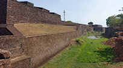
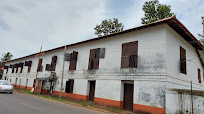
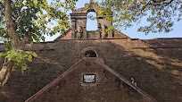

St. Angelo’s Fort, Kannur

Built by the first Portuguese Viceroy in India, Don Francesco de Almeida (1505), St. Angelo’s Fort is among the most historic sites in Kannur. This massive triangular laterite structure is flanked by gigantic bastions that make for an imposing sight. It Kannurd hands between the Dutch and eventually the British, who would remodel and reequip it into their primary military stronghold in Malabar.
Arakkal Kettu Museum

Kannur’s rich and vibrant landscape is host to the great Arakkal Kettu Museum, former residence of the only Muslim Royal Family in Kerala, the Arakkal Ali Rajas. Step inside this beautiful architectural marvel and be transported to a different era, with heirlooms and artefacts of their rein adorning the entire building.
The museum exhibits artefacts and heirlooms of the royal family which includes the family seal, the pathayam (the wooden box in which grain was stored), document box and so on. The royal copies of the Holy Quran, an old-fashioned telephone, swords and daggers used by the rulers, and a telescope are also on display.
Thalassery Fort

Built by the British in 1708, Thalassery Fort in Kannur district is a witness to the transformation of the region from a trading centre to a full-fledged town, rich in cultural and social tradition.
The East India Company had a settlement along the Malabar coast during the end of the 17th century. When it got permission from the then rulers of the land, the Kolathiris, it built a small fort at Thalassery. This gave it a toehold to establish a foundation in Malabar, and the fort was eventually made an administrative centre in 1776. It also became the strategic centre for the military activities of the British.